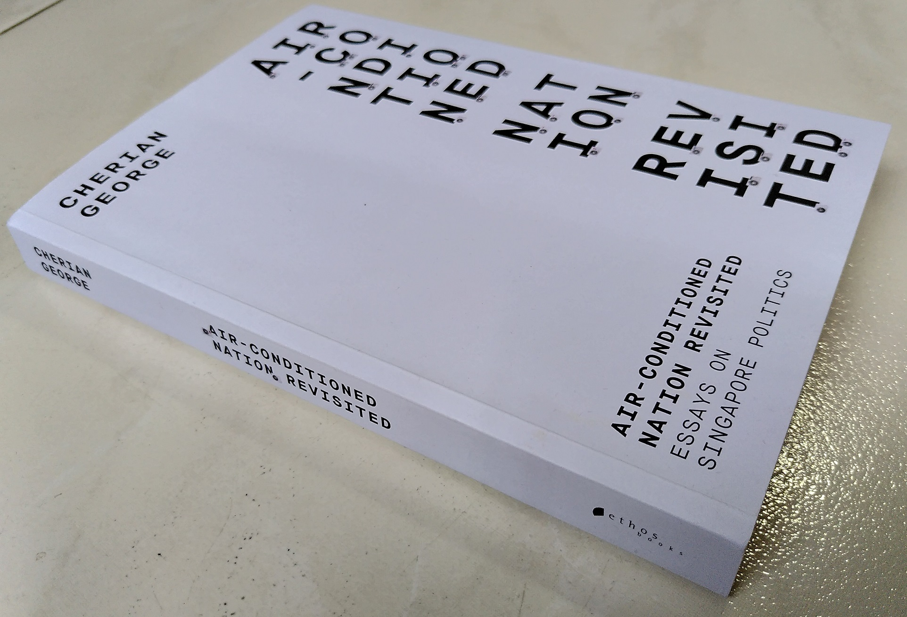

This is the last of the 3-part book-review series on the Air-conditioned Nation series of books written by the academic Cherian George (CG).
- Singapore: The Air-conditioned Nation Essays on the politics of comfort and control (2000)
- Singapore, Incomplete: Reflections on a First World nation’s arrested political development (2017)
- Air-Conditioned Nation Revisited: Essays on Singapore Politics (2020)
Singapore: The Air-conditioned Nation Revisited (2020)
I’m departing from the usual style of writing book reviews by putting my conclusion and summary at the top as some context I feel is in order.
This book is different from the earlier books in that it republishes many of the essays written in the previous 2 books. This book is just 3 years away from the previous version hence it’s understandable that there isn’t much additional content unlike the 17-year gap between the first and second book.
For someone like myself who just completed this series in quick succession, it actually wasn’t much of a “revisit” to me. For a new reader who is short of time, reading this latest book is sufficient instead of the entire series. CG has selectively chosen the best of the previous essays that are still relevant today with some more recent additions.
As a consequence to that, I’ll only focus more deeply on the additional content which are actually only just 3 chapters. 3 chapters which are targeted at modern times given the recency of this book.
4G and the 2 SHANS
This chapter focuses on the PAP leadership transition (and by extension Singapore) of the 4G leaders including the anointed PM successor Heng Swee Kiat.
Today’s 4G leaders have greater expectations from the electorate.
In 1990, when Goh’s team took over, less than one in ten resident adults had a degree or diploma, six in ten didn’t have secondary qualifications. Today, almost half have degrees or diplomas, only one-quarter didn’t complete secondary school. Even if they don’t possess top qualifications themselves, many Singaporeans have had work experience in globally exposed sectors and have some sense of what strong organisations, managers and leaders look like.
Back in 1990, the PAP could impress most Singaporeans by reciting a high-achiever’s CV. Today’s citizens need more evidence before they’re convinced of a leader’s worth.
Like most Westminster systems, the people elects the ruling party and the party elects the leaders. CG explains that this means Singaporeans are isolated from the selection of their leaders. This is compounded by the fact that the PAP’s Central Executive Committee (CEC) elects the party cadres who in turn recursively elects the CEC.
Popularity among the masses does not decide succession….. One consequence of this carefully controlled, top-down process is that an incoming prime minister must work hard to prove he is his own man. Everyone knows he doesn’t owe his position to the grassroots, but to a handful of his peers and an even tighter circle of elders.
The 2 SHANS CG refers to are Law Minister Kasiviswanathan Shanmugam and former DPM Tharman Shanmugaratnam. Both are extremely capable 3G leaders whom the PAP relies on for the relatively technical-heavy portfolios like legal and finance. Summarising CG’s words on their achievements will not do them justice so I shall keep his description as much as possible.
Shanmugam as the legal mind
When LKY faded from the scene, it looked as if the PAP would never again have someone with the legal mind, shrewd instincts or street-fighter temperament to replicate his bold interventions—until now.
Shanmugam’s Protection from Online Falsehoods and Manipulation Act 2019 (POFMA), for example, is Singapore’s most sweeping media legislation since LKY’s 1986 press law amendments, which empowered the government to limit the circulation of foreign periodicals that did not give it the unedited right of reply. … Like many of Lee’s legislative creations, POFMA is globally unprecedented. Similarly, post-LKY, nobody other than Shan, as his fellow lawyers used to call him, could have pushed through the Constitutional amendments to reserve Presidential Elections for minority candidates.
Tharman as the policy brain
Tharman, who held the education and finance portfolios with distinction, is Singapore’s most highly regarded leader. More than any other minister, he inspires confidence and trust from people across the political spectrum….He drove groundbreaking social policies to ease the burden on households, like the Silver Support scheme, Medishield Life and the Pioneer Generation medical package.
…He is a world-class policy wonk who also happens to be extremely popular. He has won over the public, not with empty rhetoric or simplistic solutions, but through his palpable sincerity in wanting to build a country where people are treated with dignity and met at the point of their need, whether those needs are economic or more intangible.
Tharman’s sidelining showed just how resistant the PAP is to reform. Lee Hsien Loong has paid lip service to the need to think outside of the box and slaughter sacred cows, but his administration’s overriding instinct has been to preserve the status quo. Tharman was a rare exception, and evidently could not tip the balance in cabinet in favour of progressive change. That’s no wonder, because the PAP’s leadership selection system, built to ensure cohesion, also promotes intellectual inbreeding.
Divergent views will always contain an implicit criticism of the legacy that the incumbents want to pass on, so a top-down leadership succession system tends to penalise candidates prepared to engage in a radical reassessment of the country’s direction. At a time when even Singaporeans close to the establishment understand the need for fresh thinking, the process has a strong bias in favour of conservatism.
The point I can gather from CG is that he seems worried on the capabilities of the 4G leadership with the imminent departure of these 2 SHANS from the leadership scene.
Note that this book was written before the COVID-19 crisis and GE2020. With DPM Heng’s relatively poor showing in East Coast GRC at just 53.4%, it remains to be seen whether he will still remain as the preferred candidate to succeed as Prime Minister and how much the 4G transition schedule will be pushed back further.
Low’s Gift to the nation
Low Thia Kiang (former Secretary-General of the Workers Party), led the WP to win Aljunied GRC in GE2011. Thus becoming the first opposition party in Singapore history to have done so.
More than just a greater diversity of voices in Parliament, CG argues that this win has kept the PAP on their toes.
For many years, the PAP has been spared the need to think bold thoughts about its relationship with the people. The barrier to political competition was set so high that the PAP was the price-setter in the social contract.
…
By gathering a slate of credible, credentialed candidates under a trusted banner and toppling a heavyweight government team in a GRC, Low has hammered home once and for all that the PAP cannot count on qualifications, party reputation or safety in numbers to win elections. Above all, it cannot take voters for granted.
So what’s left as a winning strategy? Only dedicated service and the humility to treat all citizens as equals. After Aljunied, elections will have to be fought on these basics. This is the great favour that Low Thia Khiang has done for the citizens of Singapore. The irony, of course, is that it’s also a favour to the ruling party— forcing it to reform and come back far stronger in 2015.
Whatever is good for the PAP as the ruling party is also good for Singapore. Still even with 10 seats after GE2020, the WP have a long way to go before reaching the 1/3 bar to block constitutional changes.
The Dogma behind POFMA
The Protection from Online Falsehoods and Manipulation Act (POFMA) was enacted in 2019 officially to counter online falsehoods.
CG fairly points out the immediate surface pros and cons of POFMA:
So we might, with good reason, welcome government restrictions on online falsehoods that cause harm to vulnerable communities or public health…. But none of this required that we let the government arm itself with powers that make it harder for us to hold officials to account.
More can be read from it than what the official reasons state.
Pofma is more extreme than defamation law. In defamation cases, judges look at the meaning of the problematic statement within the context in which it appears. Pofma, in contrast, allows ministers to zero in on a single false or misleading line on its own, and order the take-down of the whole article, including accurate criticism of their work. …nobody other than government ministers can trigger correction or removal orders. … …people who already hold power are prone to lie and mislead as much as opponents who seek that power. Indeed, the lies of rulers are generally more harmful to society than the lies of the ruled. So it’s reasonable to expect any law against falsehoods to apply to all sides.
It is this kind of nuanced discussion that Singapore should have rather than the binary true\false you are for or against online falsehoods whether you support POFMA or not. As with any law, the devil is always with its interpretation and implementation. The ideals of taking down falsehoods may seem reasonable in theory, however the way such a rule is implemented gives too much power to ministers (or senior civil servants during elections) with hardly any recourse to check on the potential wrongful use of such powers.
Liberal democracies recognise that public discourse requires breathing room: you have to allow people to get some things wrong if you want to benefit from the larger truths they are trying to communicate. But Pofma tells officials that critics deserve no such latitude.
The room to make mistakes is actually a new perspective. I admit I have never thought of it that way but it makes sense now. Without such room, everyone has to be extremely careful knowing that one single error, even accidentally made, is vulnerable to you being served a legal letter. This could cause a chilling effect where people just self-censor their ideas and don’t even bother to share them.
Pofma is symptomatic of the PAP’s shift from pragmatism to dogmatism. Government leaders still claim to be non-ideological, embracing whatever works for Singapore.
The state’s self-image as “exceptional” is, therefore, not without basis. What’s dubious is the idea that Singapore can only preserve its exceptional strengths by fiercely protecting every feature of the Singapore model— regardless of whether particular features are indispensable for future success, inconsequential, or actually in the way. Such an attitude turns Singapore’s exceptional status into a self-serving government ideology of exceptionalism that encourages the powerful to insulate themselves from sustained, penetrating democratic accountability.
The introduction of POFMA ties in closely with the idea of “Calibrated Coercion” CG introduced in his previous book of this series Singapore,Incomplete (2017). It’s an extremely measured approach used only occasionally such that the public can brush this aside as the exception rather than the rule.
Most people who are not content creators will probably not care about POFMA as it will not affect them. However, another point of view should be considered. Even if one does not create content, you certainly do consume facts or opinions whether it’s from the government linked media organisations or independent websites. The current implementation of POFMA may indirectly constrain these sources of information especially the independent ones reducing the diversity of perspectives you might receive.
That is something I’m most worried about.
Final Words
This is my first time binge-reading 3 books and writing reviews in a short span of a few weeks. It’s like going through 20 years of Singapore politics at one go.
Writing book reviews may seem like an activity reserved for students or journalists, not for someone outside of these fields like myself. However, I have learned a lot. Putting my thoughts into writing has made me remember and critically evaluate what the author has said.
You have not truly read a book, until you have written a review for it.


{kind=link}